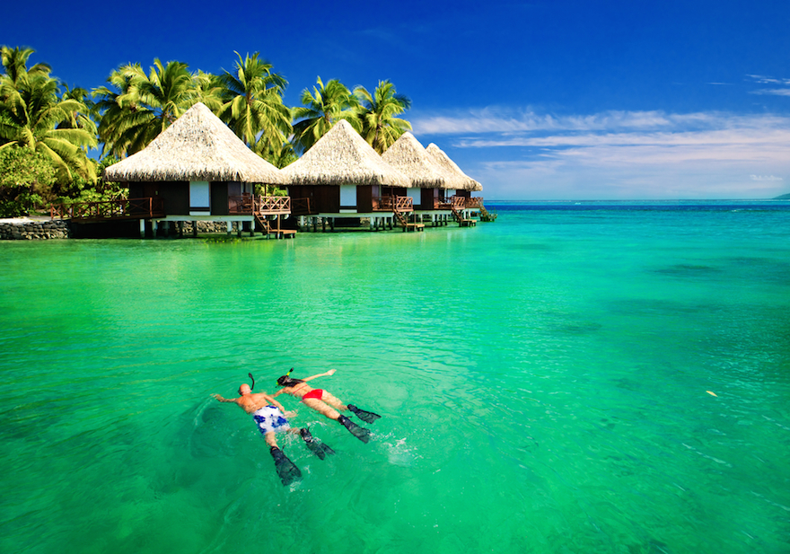

Paris
Nova Zelândia
Turquia
Bora Bora
Londres
Destinos populares

Bora Bora
Polinésia Francesa
O que a ilha de Bora Bora tem de tão especial? Lagoas azuis,
praias de águas cristalinas, corais perfeitos para serem
vistos em mergulhos, resorts de luxo e bangalôs que flutuam no
mar. É daqueles lugares para ir e não se cansar de ver a
paisagem!

Paris
França
É impossível não se render aos encantos da capital francesa. A
cidade é vibrante, charmosa, divertida, berço da cultura e da
arte… enfim, é infindável lista de qualidades!

Londres
Inglaterra
Às margens do Rio Tâmisa, Londres abriga o Big Ben e tantos
outros cartões-postais famosos, como a ponte da Torre de
Londres, o palácio de Buckingham e a Abadia de Westminster. É
daqueles destinos perfeitos para ir e voltar várias vezes.

Grand Canyon
Estados Unidos
O Grand Canyon é um dos destinos mais procurados pelos
turistas que estão em Las Vegas e que buscam passeios de
natureza. Os paredões rochosos e as belas paisagens são o
ponto alto de uma visita ao Grand Canyon.

Roma
Itália
Roma é um destino que não precisa de muito tempo para nos
conquistar. Com museus, excelentes restaurantes, bom
transporte público e variedade de pontos turísticos, a capital
italiana é a mistura da tradição e da inovação.
Países populares

Nova Zelândia
A Nova Zelândia é um destino para ser apreciado com calma,
preferencialmente, em roteiros que percorram toda a Ilha Norte
e Ilha Sul, principais porções de terra a formar o país. A
verdade é que a Nova Zelândia se torna ainda mais interessante
a cada dia que você passa por lá.

Turquia
A Turquia é lar de cidades que exalam história, arte e cultura
por todos os lados e oferecem entretenimento para os mais
diversos tipos de público. São destinos surpreendentes, com
praias paradisíacas, turismo de aventura, gastronomia de
qualidade, entre tantos outros motivos que fazem da Turquia um
dos países mais desejados por viajantes do mundo todo.

Peru
Com uma cultura riquíssima e paisagens surpreendentes, o Peru
é uma caixinha de surpresas. É um país de belezas naturais
exuberantes, lindas montanhas da Cordilheira dos Andes,
gastronomia de excelente qualidade em Lima e sítios
arqueológicos únicos como o Machu Picchu.
Indonésia
A Indonésia possui mais de 17 mil ilhas e é o maior país
muçulmano do mundo. Mas é Bali, a única ilha hindu do país,
que atrai a maioria dos visitantes. Paraíso dos surfistas e
para aqueles em busca da espiritualidade, Bali é o lugar
perfeito para se desligar do ritmo acelerado da vida urbana e
descansar.

Grécia
Belezas naturais, história, gastronomia, excelente clima
(especialmente no verão europeu) e receptividade do povo local
são apenas alguns dos motivos que fazem da Grécia um destino
muito desejado. É na capital, Atenas, que o visitante poderá
conhecer de perto a Acrópole mais famosa do mundo.